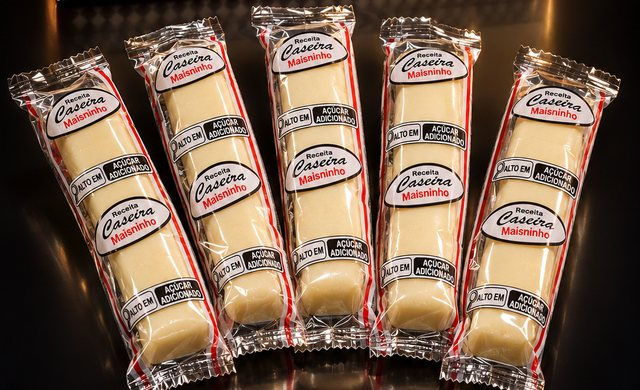
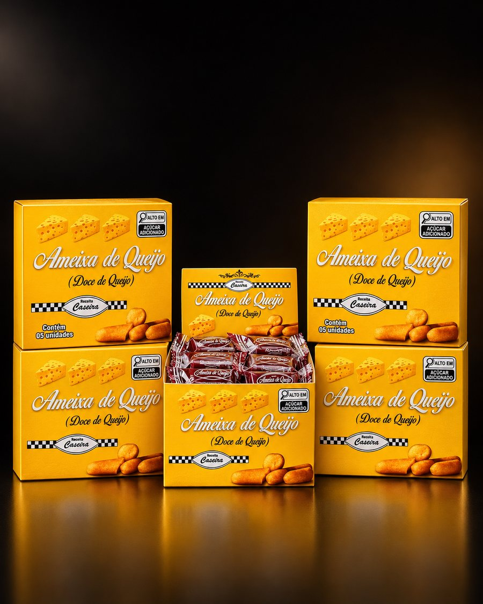
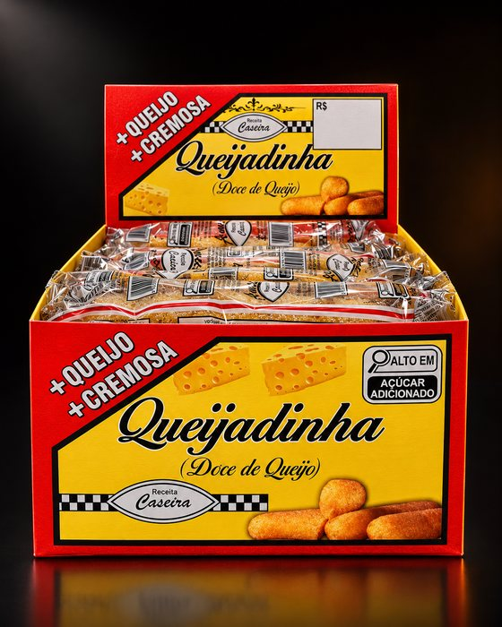
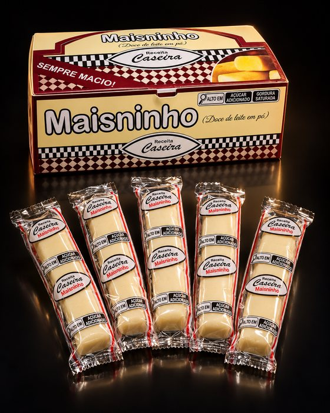
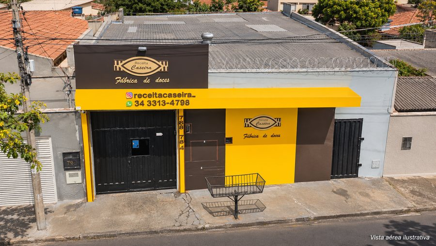

Atacado
Fornecemos doces caseiros para revenda em Uberaba e região. Peça as condições de atacado e monte seu pedido pelo WhatsApp.
- Padarias
- Mercearias
- Empórios
- Cantinas
- Revendedores
- Mesas de festa
Há mais de 25 anos, a família Receita Caseira produz os próprios doces aqui na Rua Inglaterra. Vendemos no atacado e no varejo.

Toda a produção é própria, na fábrica do Jardim Bela Vista, e cada doce sai embalado e em caixa. Escolha e peça direto pelo WhatsApp: a mensagem já vai com o nome dele.

Doce de queijo de receita mineira, embalado um a um. Vem em caixinha com 5 unidades, boa para presentear, e em caixa expositora para o balcão.
Para revender, servir na festa ou levar para casa.
Pedir ameixa
Mais queijo e mais cremosa, como está escrito na caixa. Cada queijadinha vem embalada uma a uma, em caixa expositora pronta para o balcão.
Para padarias, cantinas, mercearias e para a sua mesa.
Pedir queijadinha
O doce de leite em pó da casa, em barrinhas macias embaladas uma a uma. Agrada criança e adulto e vai bem na lancheira, no balcão e na sobremesa.
Para revender, festas e o doce do dia a dia.
Pedir MaisninhoA mesma fábrica atende os dois. O que muda é a quantidade.
Fornecemos doces caseiros para revenda em Uberaba e região. Peça as condições de atacado e monte seu pedido pelo WhatsApp.
Passe na fábrica de segunda a sexta, das 8h às 17h, e leve seus doces na hora. Se preferir, reserve antes pelo WhatsApp.
Diga qual doce você quer e a quantidade.
A equipe confirma disponibilidade, valores e retirada.
R. Inglaterra, 784, Jardim Bela Vista, de segunda a sexta.
Uma receita de família que virou fábrica, sem sair de Uberaba.
São mais de 25 anos produzindo doces em Uberaba. A receita continua com a família e a produção continua aqui, no Jardim Bela Vista.
Por isso o doce que sai da fábrica é o mesmo que chega à padaria do bairro, à mesa de festa e à sua casa. Ameixa de queijo, queijadinha e Maisninho, feitos por quem conhece o doce mineiro de perto.
Procure o toldo amarelo com a placa marrom na Rua Inglaterra, número 784. A loja fica na própria fábrica.

Mapa da Receita Caseira na R. Inglaterra, 784, Uberaba.
O que as pessoas mais perguntam antes de passar na fábrica.
É um doce tradicional mineiro feito de queijo. Apesar do nome, a estrela é o queijo: o nome vem do formato arredondado. Na Receita Caseira, a ameixa de queijo é de produção própria, embalada uma a uma e vendida em caixinha com 5 unidades.
Direto na fábrica da Receita Caseira, na R. Inglaterra, 784, Jardim Bela Vista, de segunda a sexta, das 8h às 17h. Você também pode pedir pelo WhatsApp (34) 3313-4798.
Sim. A fábrica atende atacado e varejo. Padarias, mercearias, empórios, cantinas e revendedores podem pedir as condições de atacado pelo WhatsApp.
Não. Funcionamos de segunda a sexta, das 8h às 17h. Sábado e domingo a fábrica fica fechada.
Mande uma mensagem pelo WhatsApp dizendo o doce e a quantidade. A equipe confirma disponibilidade, valores e retirada na fábrica.
É o doce de leite em pó da Receita Caseira, também procurado como doce de ninho. Vem em barrinhas macias, embaladas uma a uma, vendidas em caixa no atacado e no varejo.